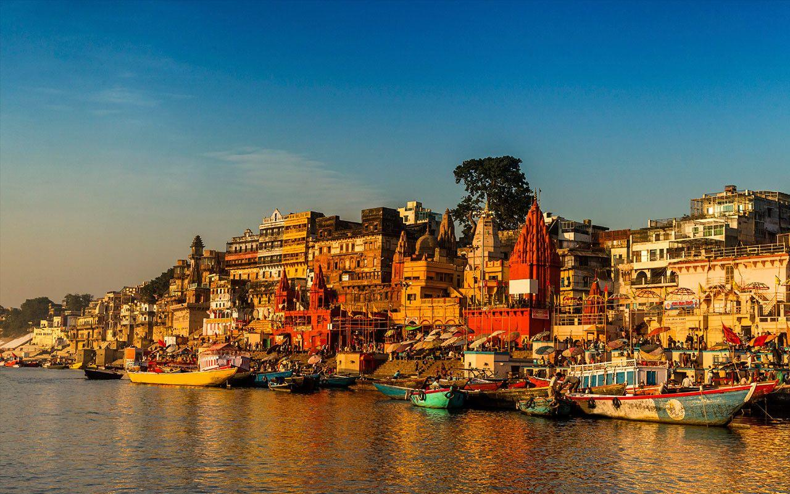

About: Varanasi is one of the oldest cities in the world, famous for Ganga Aarti and spiritual culture.
Best Time: October – March
Weather: Moderate to hot
Route: Reach Varanasi → Explore ghats
✈ Airport: Lal Bahadur Shastri Airport
🚆 Railway: Varanasi Junction
🚌 Bus: Varanasi Bus Stand
If you already visited, help others and us 🙌